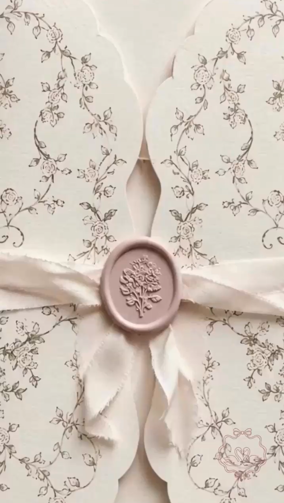

وَمِنْ آيَاتِهِ أَنْ خَلَقَ لَكُمْ مِنْ أَنْفُسِكُمْ أَزْوَاجًا لِتَسْكُنُوا إِلَيْهَا وَجَعَلَ بَيْنَكُمْ مَوَدَّةً وَرَحْمَةً
إِنَّ فِي ذَلِكَ لَآيَاتٍ لِقَوْمٍ يَتَفَكَّرُونَ
La famille Jarroudi
&
La famille Ben Arbia
ont la joie de vous convier à la célébration
du Contrat de mariage de leurs enfants
À partir de 18h00
Palais de la Municipalité
Nabeul
Votre présence est le plus beau des cadeaux.
Nous serions honorés de partager ce moment de joie
et de bonheur à vos côtés.